VNAV Lab5 UAV Visual Tracking
Boyu Huang, 24020036026; International Computer Science, Class 1; Group 8
Experiment: 30-31 October 2026; report prepared: 31 October 2026
Summary
The experiment implements visual feature matching and tracking in VMware Ubuntu 20.04 with ROS Noetic. SIFT, SURF, ORB, FAST+BRIEF and Harris+LK are evaluated on every neighboring frame pair in two official bags: 1,583 and 1,385 pairs. ORB yields 528.2 and 316.5 mean geometric inliers; FAST+BRIEF takes 1.92 and 1.65 ms on average. The report retains 17 actual screenshots and adds seven reproducible charts, alongside projection and vanishing-point derivations. Model-based geometric inliers are not human ground truth. [1-3,7]
1 Introduction
Lab3 follows a reference and Lab4 plans a route. Lab5 asks how to find repeatable image landmarks and associate them between frames. Detection selects landmarks, descriptors encode local appearance, and matching plus geometry checks their correspondence. The report follows the same settings, implementation, results, discussion and conclusions structure as the earlier Lab3/Lab4 reports.
Table 1 Tasks and reports
| Item | Task | Evidence |
| D1 | Sphere projection | Section 4 |
| D2 | Vanishing points | Section 4 |
| D3 | SIFT detection | Figures 03-04 |
| D4 | Matching and ratio test | Figures 04-05 |
| D5 | Inliers and statistics | Figure 06, tables |
| D6 | Method and sequence comparison | Figures 07-11,19-24 |
| D7 | Harris+LK | Figures 12-13,17 |
| D8 | Farneback extension | Figures 14-15 |
2 Experimental Settings
Table 2 Environment and shared parameters
| Item | Setting | Purpose |
| System | Ubuntu 20.04 / ROS Noetic | Run ROS nodes |
| OpenCV | 4.2.0 contrib; NONFREE=ON | Enable SIFT and SURF |
| Workspace | ~/lab5_complete/ws | Isolate previous labs |
| Ratio test | d1 < 0.8*d2 | Reject ambiguous matches |
| RANSAC | 3 px; confidence 0.99 | Check epipolar consistency |
| Evaluation | 1 OpenCV thread; seed 42 | Full traversal and reproducible records |
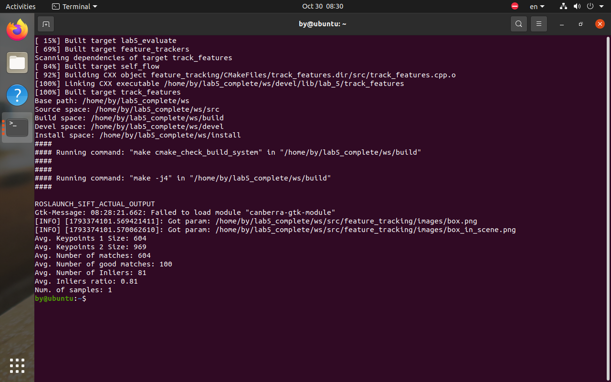
Figures 01 and 02 show the actual Ubuntu environment. OpenCV is built separately; build options and dynamic linking are retained in logs. Course code and API sources are [2,4].
3 Implementation Pipeline and Parameters
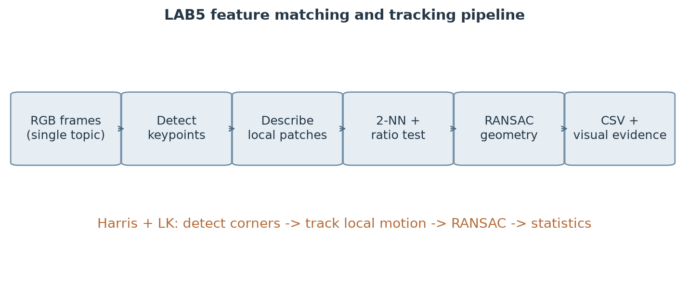
Table 3 Method components
| Method | Detection and description | Matching or tracking |
| SIFT | Scale space; 128 floats | FLANN, ratio 0.8 |
| SURF | Hessian 400; float descriptor | FLANN, ratio 0.8 |
| ORB | Up to 1000 points; 32 bytes | Hamming BF, ratio 0.8 |
| FAST+BRIEF | FAST 20; BRIEF 32 bytes | Hamming BF, ratio 0.8 |
| Harris+LK | 500 corners; quality .01; spacing 8 px | 21x21 window; max level 3 |
The SIFT, SURF, ORB and FAST tracker adapters implement detection, description and matching. FeatureTracker supplies geometric validation, drawing and average statistics. FAST is used only as a detector; a separate BRIEF extractor computes its descriptors.
SIFT and SURF use FLANN two-nearest-neighbor matching. ORB and BRIEF use brute-force Hamming distance. All descriptor methods apply the strict test d1<0.8d2. Empty descriptors, fewer than two train descriptors and incomplete neighbor lists are handled before accessing matches.
Geometric validation uses fundamental-matrix RANSAC, a 3-pixel epipolar threshold and confidence 0.99. The template algorithm is retained, with the enumeration updated for OpenCV 4. Fewer than eight candidates are not fitted. An empty candidate set has ratio zero. Returned corresponding points retain the same indexing on both images. [2,4,6]
The descriptor path matches before geometric validation; LK estimates local motion before the same geometric check. Empty descriptors, incomplete neighbor lists, fewer than eight pairs and zero denominators are guarded.
4 Individual Theory Exercises
4.1 Perspective projection of a sphere
For the normalized pinhole camera, the image plane is z=1. An image point (u,v) defines q=(u,v,1) and a ray X=tq, with t>0 for forward visibility. The sphere has radius r and center C=(0,0,d), where d>r+1. Substitution in the sphere equation gives:
(u
Interior image points correspond to rays with real intersections. The silhouette occurs when the discriminant is zero:
d
Hence u
The projection is a disk with boundary radius r/sqrt(d
For an arbitrary center C=(a,b,c), tangency gives the conic:
(au+bv+c)
If the entire sphere is in front of the camera, c>r. The two eigenvalues of the quadratic part are r
Without the front-of-camera condition, the sphere may cross the camera plane and the conic can be parabolic or hyperbolic. The forward-ray constraint must still be checked. Thus the ellipse statement requires an explicit visibility assumption. [1]
4.2 Vanishing points of parallel lines
Write two parallel lines as X1=P1+lambda D and X2=P2+mu D. Their common direction is D=(Dx,Dy,Dz). The homogeneous projection of the first line is:
[Px+lambda Dx : Py+lambda Dy : Pz+lambda Dz].
As the line parameter tends to infinity, both lines approach v=[Dx:Dy:Dz]. If Dz is nonzero, the finite vanishing point is (Dx/Dz,Dy/Dz). If Dz=0, the vanishing point lies at infinity. Each line then has constant depth and its image direction is proportional to (Dx,Dy). Their distinct image lines therefore remain parallel.
For distinct, nondegenerate image lines, Dz=0 is the required parallelism condition. A line through the optical center may collapse to a point; coincident image lines are also excluded from this statement. [1]
5 Image Pair Keypoints and Raw Matching
SIFT locates features in scale space, assigns an orientation and describes a local gradient distribution. Its default descriptor contains 4 x 4 x 8 = 128 floating-point components. Descriptor computation may remove keypoints without a valid neighborhood, so statistics use the surviving keypoint counts.
A nearest neighbor alone can yield many false matches. The distance ratio tests whether the best candidate is sufficiently distinct from the second best, rejecting some ambiguities from repeated texture. It does not prove geometric correctness. [4]
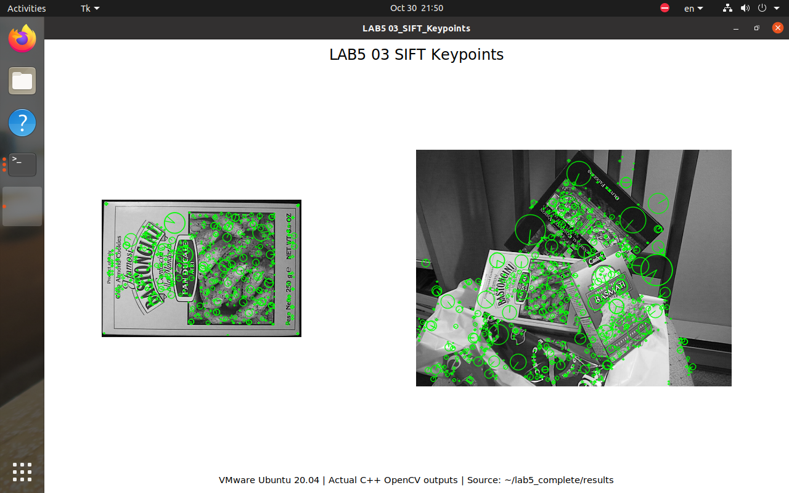
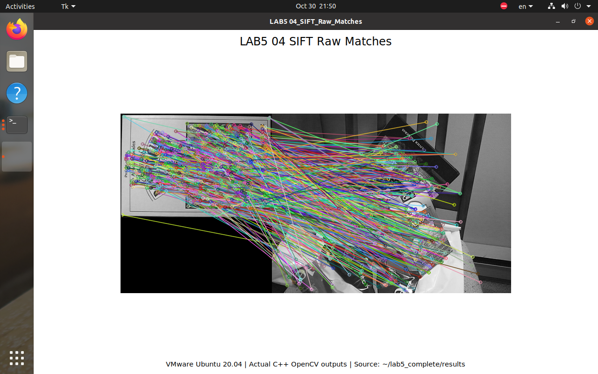
5.1 Ratio Filtering and Geometric Inliers
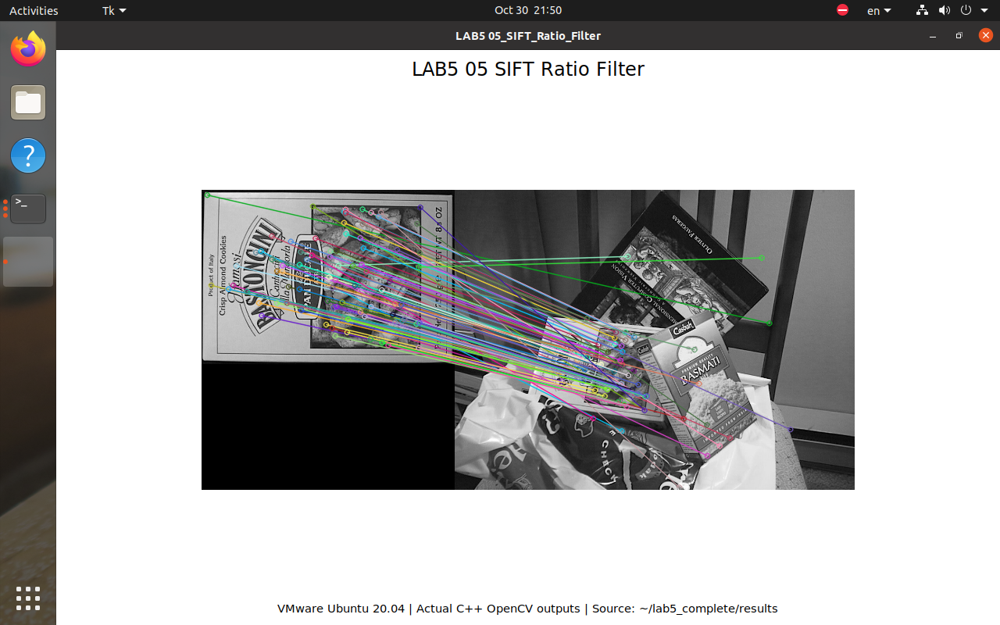

Table 4 Measured statistics pair
| Method | Pairs | KP1 | KP2 | Raw | Good | Inliers | Ratio | ms |
| SIFT | 1 | 604.0 | 969.0 | 604.0 | 97.0 | 77.0 | 79.4% | 110.15 |
| SURF | 1 | 786.0 | 1040.0 | 786.0 | 120.0 | 74.0 | 61.7% | 145.16 |
| ORB | 1 | 865.0 | 1000.0 | 865.0 | 51.0 | 43.0 | 84.3% | 12.99 |
| FAST_BRIEF | 1 | 1596.0 | 2489.0 | 1596.0 | 21.0 | 12.0 | 57.1% | 30.05 |
Green marks RANSAC inliers and red marks outliers. Ratio filtering reduces the candidate set; the fundamental matrix then rejects correspondences inconsistent with the estimated epipolar model. The box scene is strongly planar and may be degenerate for fundamental-matrix estimation. An inlier is therefore model-consistent, not necessarily correct according to human ground truth. [6,7]
5.2 SURF ORB and FAST BRIEF
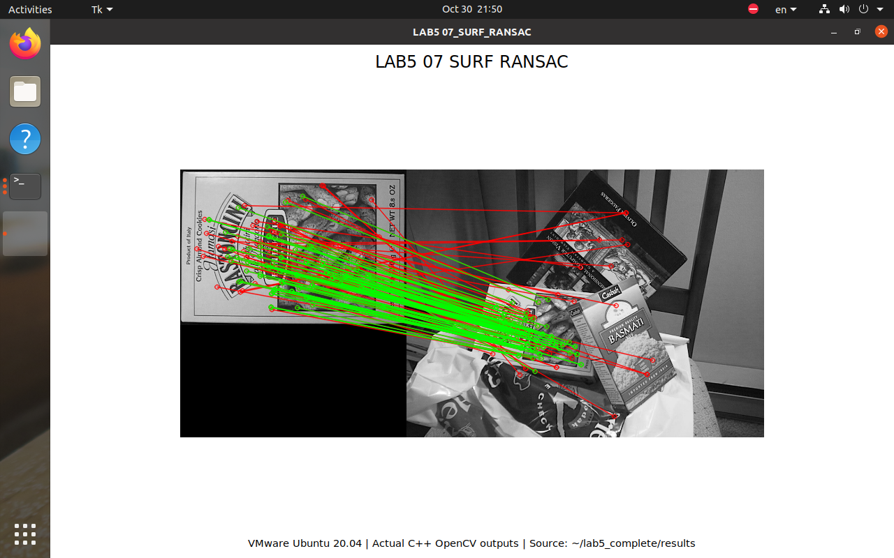
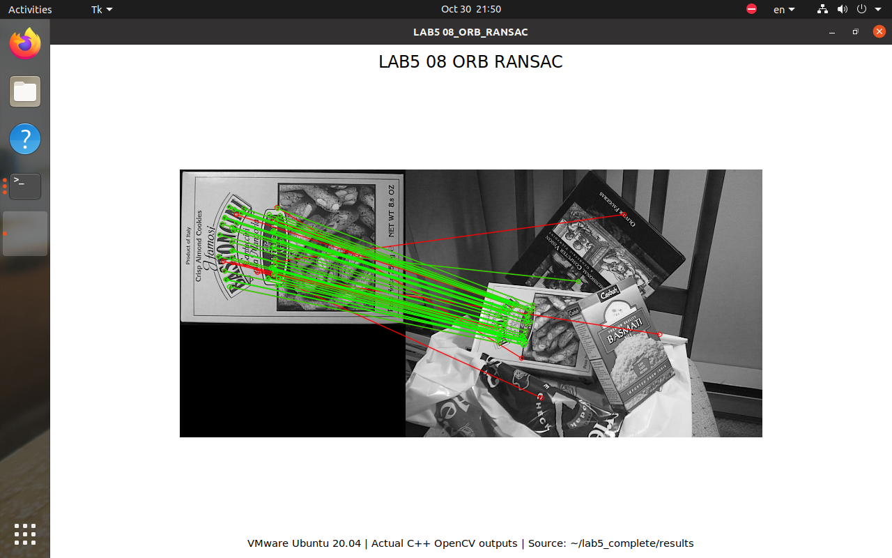
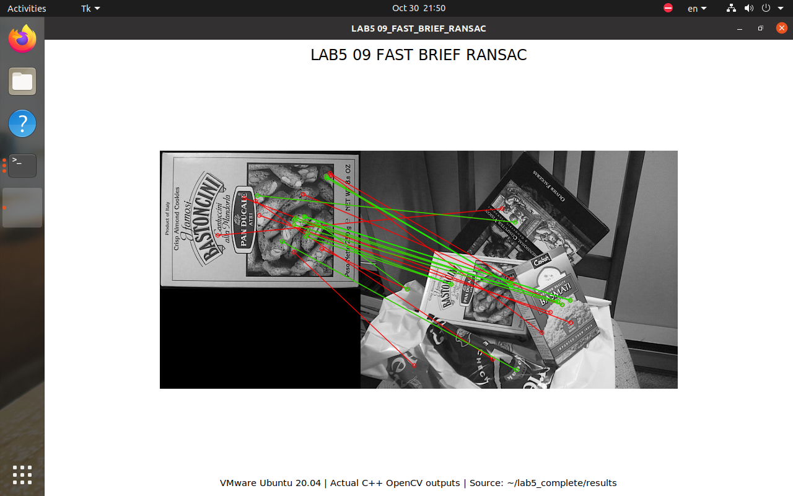
FAST detects corners but does not compute a descriptor. BRIEF compares intensity pairs to produce a 32-byte binary descriptor. Hamming distance measures differing bits; converting descriptor bytes to floating point and using Euclidean distance would change the meaning of the comparison.
FAST threshold is 20 with nonmaximum suppression. BRIEF uses 32 bytes without additional orientation compensation. ORB uses at most 1000 keypoints and a multiscale pyramid. SURF uses Hessian threshold 400; SIFT uses defaults. The same settings are used on both real sequences. [4,7]
6 Real Sequences and Evaluation Protocol
Table 5 Datasets and actual sample counts
| Dataset | Selected RGB topic | Images | Pairs |
| Dataset 1 | /camera/color/image_raw | 1584 | 1583 |
| Dataset 2 | /tesse/left_cam/rgb/image_raw | 1386 | 1385 |
Every neighboring pair on one RGB topic is traversed, without subsampling or mixing depth images and cameras. SHA256 checks agree with the original desktop copies and are recorded in datasets.json. Dataset 2 uses relative simulation time; its displayed historical date is not the experiment date. [3,7]

Table 6 Definitions of reported statistics
| Metric | Definition | Interpretation |
| Raw | Best candidate per query | Not total two-neighbor elements |
| Good | Ratio-passing matches; valid LK tracks | No ratio test for LK |
| Inlier ratio | Mean of per-pair inliers/good | Not ratio of accumulated counts |
6.1 Results on Dataset 1
Table 7 Measured statistics dataset1
| Method | Pairs | KP1 | KP2 | Raw | Good | Inliers | Ratio | ms |
| SIFT | 1583 | 403.6 | 403.6 | 403.6 | 258.5 | 249.0 | 95.7% | 49.07 |
| SURF | 1583 | 265.3 | 265.4 | 265.3 | 205.8 | 199.9 | 97.0% | 44.68 |
| ORB | 1583 | 725.0 | 725.1 | 725.0 | 538.3 | 528.2 | 98.0% | 8.50 |
| FAST_BRIEF | 1583 | 342.3 | 342.3 | 342.3 | 282.0 | 273.4 | 96.6% | 1.92 |
| LK | 1583 | 91.0 | 89.8 | 89.8 | 89.8 | 89.7 | 99.9% | 2.07 |
Dataset: 30fps_424x240_2018-10-01-18-35-06.bag. Every neighboring RGB frame pair is evaluated, without subsampling or selecting a short segment. Statistics are arithmetic means over frame pairs. The reported ratio is the mean of individual ratios, not total inliers divided by total good matches.
Among descriptor methods, ORB produced the most geometric inliers on average (528.2). FAST_BRIEF had the lowest mean computation time (1.92 ms). The highest mean inlier ratio was obtained by ORB (98.0%). These quantities measure different aspects of performance.
Harris+LK tracked 89.8 valid points per pair, of which 89.7 passed the geometric check, at 2.07 ms per pair. Its local small-motion assumption suits neighboring frames, but does not guarantee successful tracking through occlusion or large motion. [3,7]
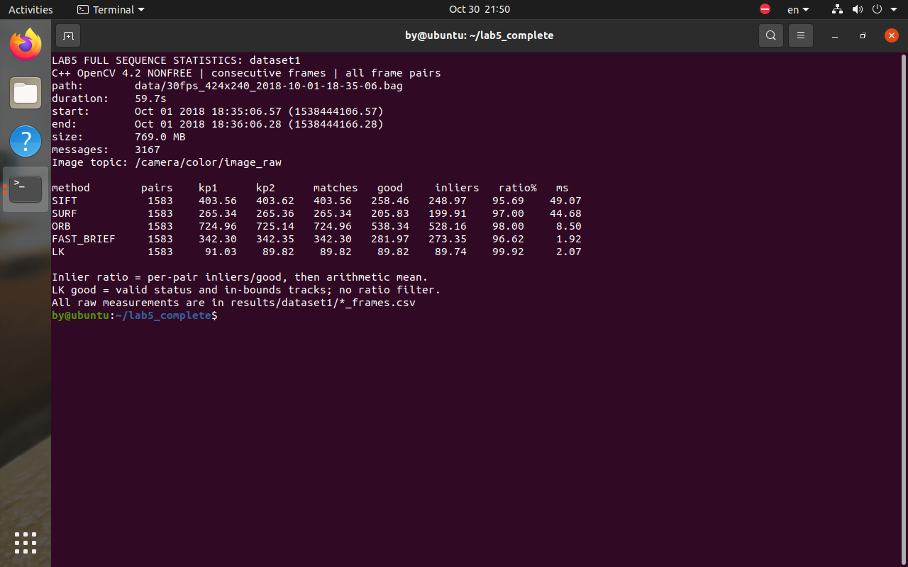
Source: results/dataset1/*_frames.csv and *_summary.csv. Figure 10 displays those records; the table is generated from the same files.
6.2 Results on Dataset 2
Table 8 Measured statistics dataset2
| Method | Pairs | KP1 | KP2 | Raw | Good | Inliers | Ratio | ms |
| SIFT | 1385 | 147.8 | 147.9 | 147.8 | 92.9 | 80.7 | 86.2% | 105.63 |
| SURF | 1385 | 475.9 | 476.3 | 475.9 | 299.4 | 259.9 | 87.2% | 135.19 |
| ORB | 1385 | 618.0 | 618.6 | 618.0 | 350.4 | 316.5 | 90.1% | 12.53 |
| FAST_BRIEF | 1385 | 299.0 | 299.3 | 299.0 | 209.9 | 193.9 | 92.1% | 1.65 |
| LK | 1385 | 65.4 | 63.8 | 63.8 | 63.8 | 59.5 | 93.7% | 5.21 |
Dataset: vnav-lab5-smooth-trajectory.bag. Topic selection and pairing follow the same rule. Its simulated timestamps run from approximately 33.86 s to 103.48 s. The historical dates displayed by rosbag info are a Unix-time interpretation, not the experiment dates. Full records are stored in results/dataset2.
Among descriptor methods, ORB produced the most geometric inliers on average (316.5). FAST_BRIEF had the lowest mean computation time (1.65 ms). The highest mean inlier ratio was obtained by FAST_BRIEF (92.1%). These quantities measure different aspects of performance.
Harris+LK tracked 63.8 valid points per pair, of which 59.5 passed the geometric check, at 5.21 ms per pair. Its local small-motion assumption suits neighboring frames, but does not guarantee successful tracking through occlusion or large motion. [3,7]
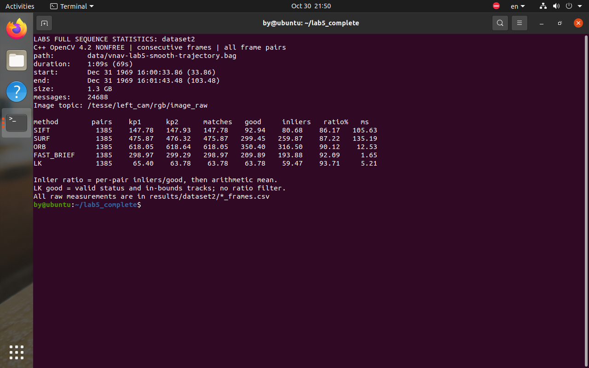
Source: results/dataset2. All methods evaluate 1,385 pairs using the same settings and definitions as dataset 1.
6.3 Quality and Computation Cost
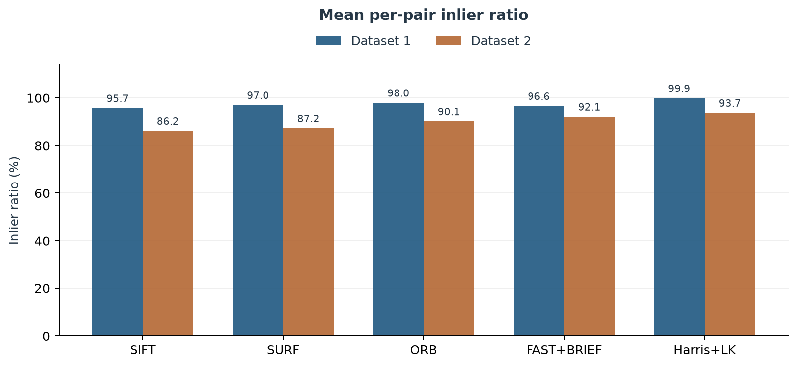
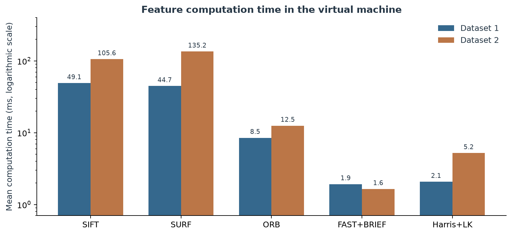
Figure 20 measures proportion, while Figure 19 measures absolute count; neither substitutes for the other. Figure 21 includes detection, description, matching and geometry, excluding file loading, drawing and capture. Its logarithmic axis spans approximately 1-135 ms; linear height differences are not time differences. VM background work and scheduling affect timing, so these are not hard real-time guarantees. [7]
6.4 Candidate Retention by Stage


Figure 22 averages good/raw over pairs, assigning zero to an empty raw set. LK is excluded because it has no descriptor ratio test. Figure 23 uses the box-pair CSV and a logarithmic count axis. Removing more candidates is not automatically better; the remaining geometric inliers and scene changes must also be considered. [7]
6.5 Temporal Stability and Timing Distribution
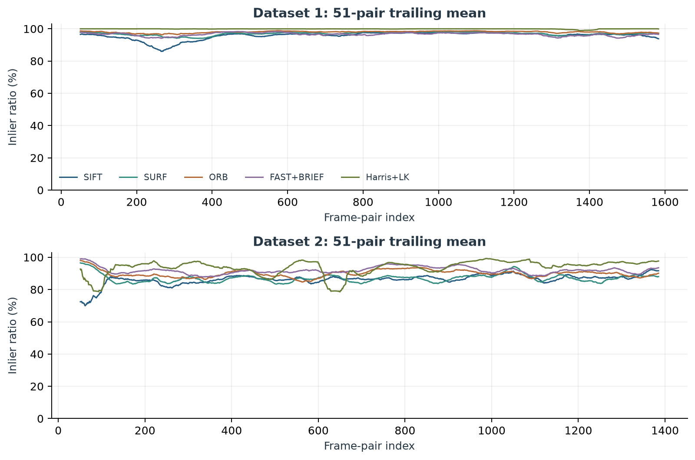
Figure 24 retains sequence order and uses a 51-pair trailing mean only for visualization. Tables still use every original pair. Drops may be associated with weak texture, occlusion or changing motion, but the plot alone does not establish their cause without ground truth. [7]
Table 9 Per-pair median and 95th-percentile time in ms
| Method | D1 median | D1 P95 | D2 median | D2 P95 |
| SIFT | 49.16 | 63.93 | 103.59 | 124.44 |
| SURF | 48.82 | 63.92 | 121.42 | 259.97 |
| ORB | 8.75 | 10.91 | 11.74 | 17.18 |
| FAST_BRIEF | 1.67 | 4.02 | 1.29 | 3.86 |
| LK | 2.06 | 2.63 | 5.07 | 6.33 |
7 Harris and Lucas Kanade Tracking
Brightness constancy assumes I(x,y,t)=I(x+u,y+v,t+1). First-order expansion gives Ixu+Iyv+It=0. One pixel does not constrain both motion components. LK assumes similar motion within a local window and solves a least-squares problem. Harris corners provide intensity variation in both directions, improving conditioning.
Parameters are a 21 x 21 window, maximum pyramid level 3, at most 500 Harris corners, quality 0.01 and minimum spacing 8 pixels. The ROS class keeps surviving corners and detects again below 150 points. The offline table detects Harris points anew in each first image, keeping a fixed pairwise evaluation protocol. [5]

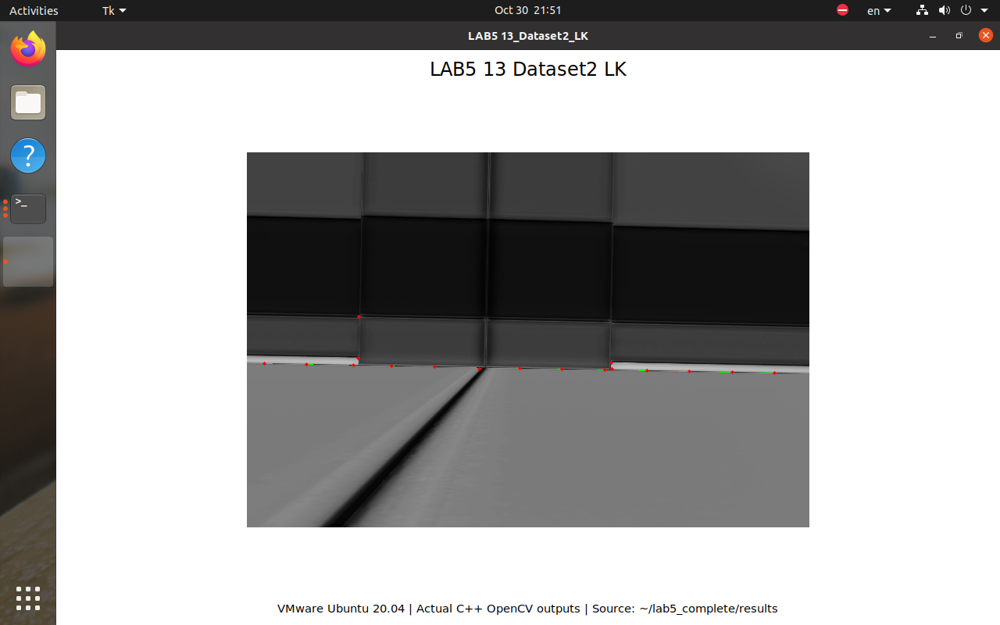
LK relies on approximate brightness constancy, locally coherent motion and sufficiently small displacement for linearization. Pyramids extend the displacement range but do not remove failures caused by occlusion, blur, weak texture or lighting changes. Descriptor methods can rematch over larger motion; LK often has a lower local tracking cost. [5]
8 Farneback Dense Optical Flow Extension
Dense flow is computed between neighboring real frames. Parameters are pyr_scale=0.5, levels=3, winsize=15, iterations=3, poly_n=5 and poly_sigma=1.2. Hue represents direction; value represents flow magnitude normalized within the frame. Saturation is fixed at 255. [5]


Per-frame normalization means that brightness cannot be compared across these images as an absolute speed measure. Dense flow covers the full image, including poorly constrained textureless or occluded areas. This extension illustrates the difference between sparse feature trajectories and a dense motion field. [5]
9 ROS Interactive Verification
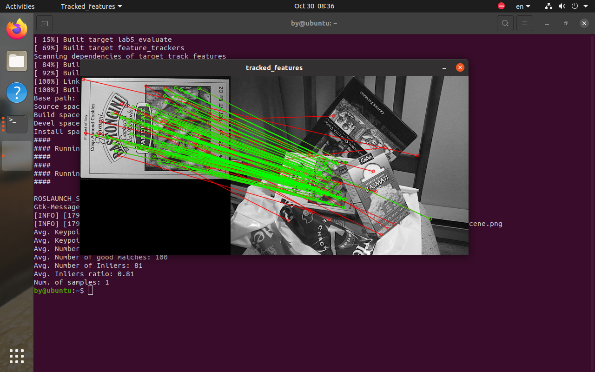
The ROS node and offline evaluator are launched separately. FLANN approximation and the RANSAC random state can produce slightly different counts. All comparison tables consistently use the offline evaluator initialized with random seed 42. This screenshot verifies the ROS input and display path. [7]

The course video_tracking.launch starts bag playback and the Harris+LK node. The live window verifies image-topic reception, grayscale conversion, status checks and trajectory drawing. Complete tables come from offline traversal, so rendering speed and message queues do not determine which frame pairs are evaluated. [7]
10 Discussion
Table 10 Observed tradeoffs
| Method | Observed behavior | Caution |
| SIFT | Stable box-pair geometric correspondences | Higher measured computation cost |
| SURF | More features than SIFT in dataset 2 | More points need not improve ratio |
| ORB | Highest mean inlier count in both sequences | Depends on scale, texture and point budget |
| FAST+BRIEF | Lowest mean computation time | Weaker matches on the box pair |
| Harris+LK | High model consistency for local motion | KP2 and Good have different meanings |
Inliers come from an estimated fundamental matrix, not manual labels. The box scene is approximately planar, and neighboring frames have a small baseline; both may affect geometric estimation. A high inlier ratio must not be presented as ground-truth matching accuracy. [6,7]
Live ROS tracking verifies the message and display path; offline traversal avoids queue-related omissions and supplies complete tables. Online LK retains points, whereas the offline comparison detects anew per pair. Their records must not be mixed. [7]
Figures 18-24 are generated from saved CSV files by make_report_charts.py, without manually entered measurements. Raw CSV, charts/chart_data.json, numbered captures and dataset hashes are retained for independent checks. [7]
11 Conclusions and Reproduction
The completed pipeline includes feature extraction, two-neighbor matching, ratio filtering and RANSAC validation, together with Harris+LK sparse tracking and Farneback dense flow. SIFT and SURF use scale-space features; ORB and FAST+BRIEF provide compact binary descriptors. Performance depends on image texture, motion and parameter choices.
Limitations include model-based rather than ground-truth inlier labels, degeneracy in planar scenes, and differing meanings of KP 2 for LK and descriptor methods. Timings describe one complete traversal in a virtual machine, with background transfers and scheduling effects. They are not hard real-time guarantees.
Build the isolated dependencies with build_opencv.sh. Place feature_tracking under ws/src, change directory to ~/lab5_complete/ws and run:
source /opt/ros/noetic/setup.bash
export OpenCV_DIR=$HOME/lab5_complete/opencv/lib/cmake/opencv4
catkin_make -DCMAKE_BUILD_TYPE=Release
source devel/setup.bash
Run bash run_all.sh from ~/lab5_complete for complete evaluation. For interactive matching use two_frames_tracking.launch with descriptor:=SIFT. For video use video_tracking.launch with descriptor:=LK and the required path_to_dataset argument. Full commands are in the repository README. Press a key to exit the image-pair window or Ctrl+C for video.
Offline usage is lab5_evaluate bag DATASET.bag OUTPUT_DIR METHOD. Available methods are SIFT, SURF, ORB, FAST_BRIEF, LK and FLOW. CSV files, summaries, logs and numbered screenshots are preserved together, allowing the tables to be independently recomputed. [2,4,5,7]
Table 11 Reproduction file index
| Material | Path | Purpose |
| Source | feature_tracking/ | ROS nodes and evaluator |
| Statistics | results/pair, dataset1, dataset2 | Per-pair and summary CSV |
| Captures | screenshots/01...17 | Actual execution evidence |
| Charts | charts/18...24 | Reproducible PNG and vector PDF |
| Scripts | scripts/ | Build, run, plot and report |
References and Data Provenance
Bracketed numbers in the text correspond to the sources below. Algorithm and API descriptions cite official documentation; measured performance values cite the experiment records, not illustrative documentation results.
[1] MIT VNAV LAB5 Exercises.
https://vnav.mit.edu/labs_2023/lab5/exercises.html
[2] MIT-SPARK VNAV-labs VNAV2021 release.
https://github.com/MIT-SPARK/VNAV-labs/releases/tag/VNAV2021
[3] MIT-SPARK VNAV lab data.
https://github.com/MIT-SPARK/VNAV-lab-data
[4] OpenCV 4.2 Feature Detection and Description.
https://docs.opencv.org/4.2.0/d5/d51/group__features2d__main.html
[5] OpenCV 4.2 Object Tracking.
https://docs.opencv.org/4.2.0/dc/d6b/group__video__track.html
[6] OpenCV 4.2 Camera Calibration and 3D Reconstruction.
https://docs.opencv.org/4.2.0/d9/d0c/group__calib3d.html
[7] LAB5 measured CSV records and numbered evidence.
https://github.com/hbyhby123/vnav-personal/tree/master/lab5/results
Data recorded: 30-31 October 2026. Upstream code revision: 2443ec7e491001d09ab8dd66f6b953177043b784. Figures 01-17 are actual Ubuntu captures; Figures 18-24 are generated charts and the pipeline diagram. Layout follows the chapter structure, header, blue-gray tables and captions of the repository Lab3/Lab4 reports; their measurements are not reused.
30fps_424x240_2018-10-01-18-35-06.bag
SHA256: 35fe022bf2477304ac94dd518f92471689d6c563358fec3e58ef48e66620c4b8
vnav-lab5-smooth-trajectory.bag
SHA256: 6895925a18b06ff9d73fa2cac4bd276f2ef17a09e48be9e79a599cad8fc81ab1